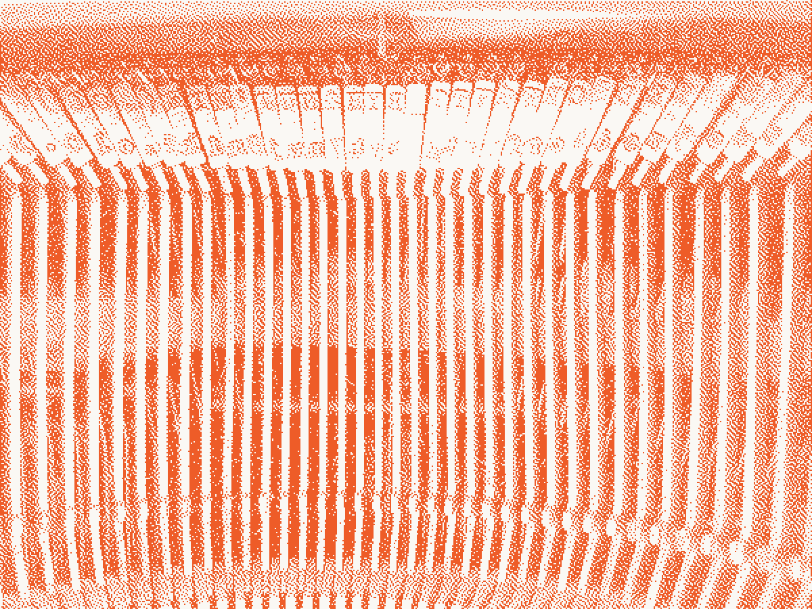
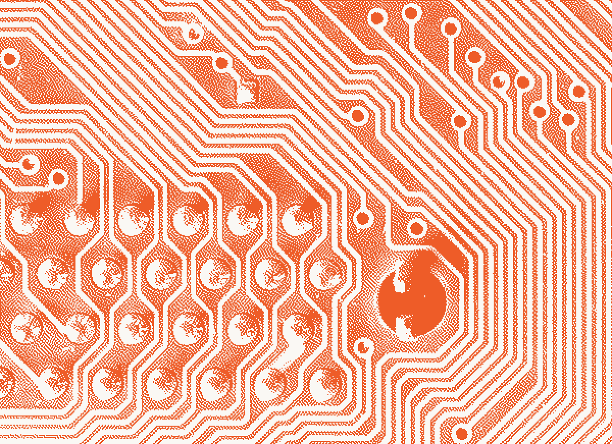

VOL. I · No. 10Tuesday, June 16, 2026 · Weekly EditionCovering 6 frontier labs · Anthropic first
All the frontier that ships
Shipped.
Forecast: three days of sun, then a federal blackout. Keep a second model warm.
Front PageModelsPlatformClaude CodeSDKsPolicyThe Log
US Capitol, west front. Public domain.
Three days after launch, a letter from Commerce grounded Fable 5 and Mythos 5 for every customer on earth.
The Investigation, below
Investigation · Lead Story
The letter that turned off the frontier
Seventy-two hours after Fable 5 and Mythos 5 went public, a letter from Commerce took them offline for every customer on earth.
Edited by Eddie Belaval · Reported with the assistance of Claude · 9 min read
The Herbert C. Hoover Building, Washington. US Department of Commerce, public domain.
The most consequential thing that happened to Anthropic this week was not something it shipped. It was something it had to un-ship, on a government order, for the entire planet at once.
Fable 5 and Mythos 5 went generally available on June 9. On the evening of June 12, an export control directive ordered Anthropic to suspend access for any foreign national, inside or outside the United States, including its own employees. A restriction wired to citizenship rather than geography cannot be enforced with a regional toggle. There was no narrower way to obey it. Both models went dark for everyone.
All other Claude models stayed up. The grounding was surgical at the model level and total at the access level, which is the worst combination for anyone who wired Fable 5 into something the day after launch.
Also Shipped The week around the blackout
Requests to the dated 4-series IDs now return errors. Carl Lender, CC BY 2.0.
The Retirement Clock
Sonnet 4 and Opus 4 reach end of life
Sixty days of notice, then nothing. Anyone still pinned to a 4-series ID had two outages stacked on the same model layer. One of them was avoidable.

Thad Zajdowicz, CC BY 2.0.
Public Record
What nearly 52,000 Americans actually fear
Job loss leads in every state at 64%. Only 15% trust AI companies to regulate themselves. The public asked for a hand on the switch.
Billing
Programmatic usage gets its own meter
A human at a terminal is a subscription. An agent in a loop is metered.

Claude Code
The CLI kept its own counsel
Agent(model:opus) now blocks Opus subagents outright. Photo: quapan, CC BY 2.0.
SDKs
Quiet on the wire
Python v0.109.2 and TypeScript v0.104.2 strip the dead model IDs.
Policy
The switch sits in Washington
Export control, built for chips and centrifuges, pointed at an API.
The Move
Keep a second model warm
Route to Opus 4.8 or Sonnet 4.6 tonight. Treat a model ID as revocable.
The model you couldn't avoid became the model you couldn't reach. Three days up. Then dark.
Photos: US Capitol and Commerce Department, public domain. "Datacenter Server Racks," Carl Lender, CC BY 2.0. "Clickety Clackety," Thad Zajdowicz, CC BY 2.0. "Labyrinthine circuit board lines," quapan, CC BY 2.0. All images rendered in orange ink by the Shipped. image press.